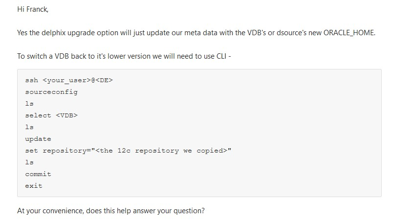

This was first published on https://www.dbi-services.com/blog/delphix-and-upgrading-the-clones/ (2021-05-05)
Republishing here for new followers. The content is related to the versions available at the publication date.
.
Delphix is a tool for easy cloning of databases. The idea is that all is automated: the user can create a clone, rewind or refresh it with one click. However, I was suprised that the following common scenario is not managed by the Delphix engine:
This is very common. You use clones to test the application, and testing on upgraded database version is probably the most common clone usage.
So, there’s an ‘Upgrade’ button, just near the refresh one, but this is a false-friend. It doesn’t upgrade anything but just sets the Oracle Home known by Delphix to the new one after you upgraded yourself. Because Delphix does not detect this change automatically. But Delphix requires it in order to run the toolkit actions. No problem, the upgrade of Oracle is easy with Oracle AutoUpgrade, and that’s just one additional manual action. So why is it called ‘Upgrade’ and not ‘Change Oracle Home’? That’s the problem: you can change only to a newer version Oracle Home. Then… how do you revert back to the previous version in order to refresh the clone? You can’t.

That’s not exactly what I call a ‘CLI’ – Command Line Interface is supposed to accept actions and parameters other than stdin and return codes. But let’s try to automate that.
Here I’m showing a template for a Do-It-Yourself solution. Please don’t use it as-is. Test it. Because having access to the tty console rather than a clean CLI or API doesn’t allow for professional error handling.
This console is accessible through ssh with the admin user. Or an admin user that you have defined in the management console. This is not the setup console.
I’ve written a glossary about this: https://www.dbi-services.com/blog/delphix-a-glossary-to-get-started/
You don’t want to have hardcoded passwords, so better use passwordless authentication. I’ll do all that from the database server as root. so I check my public key that I’ve generated with `ssh-keygen`:
# cat ~/.ssh/id_rsa.pub
ssh-rsa AAAAB3NzaC1yc2EAAAADAQABAAABAQDRIw5638wyewN716iARPTKpaeCP+HtNOEa5TSKfI8Eh3h3EUwb+H3qzrWtv/b0k147QC0ET93kf2Y4AgvoaFKvo3ms3U6pI5BtCBN3h49KCcj4k1sPKmytJap6G6C79BMZKoGbG6hOSQ7PbbHHPoSgSYiXrxaO3Rh8OqWl+EqSQ45TSLE5Nb6+YuASEeILSUv3fezE21/kZ4dxsYJeE+6pfaUHCm/sCTFKM7JZJsviQ/3usq+7m8w+AreedQXAYERq9tDdCcrCUkmrj3OhiLh3YoYre8XkZ0QiBT1bwhkPlxGO5aN5bkihqm2ETF3y9sbdf2d/xXpKTnx3tTWZo6tr root@dbserver
This can be put once in the Delphix console.
This only time I’ll connect with the password I defined when creating the user from the GUI
:~$ ssh admin@10.0.1.10
Password:
ip-10-0-1-10> ls
...
user
...
ip-10-0-1-10> user
ip-10-0-1-10 user> ls
Objects
NAME EMAILADDRESS
dev dev@nomail.com
qa qa@nomail.com
labadmin labadmin@nomail.com
admin admin@nomail.com
ip-10-0-1-10 user> current
ip-10-0-1-10 user 'admin'> ls
Properties
type: User
name: admin
...
ip-10-0-1-10 user 'admin'> update
ip-10-0-1-10 user 'admin' update *> ls
Properties
type: User
name: admin
...
ip-10-0-1-10 user 'admin' update *> set publicKey="ssh-rsa AAAAB3NzaC1yc2EAAAADAQABAAABAQDRIw5638wyewN716iARPTKpaeCP+HtNOEa5TSKfI8Eh3h3EUwb+H3qzrWtv/b0k147QC0ET93kf2Y4AgvoaFKvo3ms3U6pI5BtCBN3h49KCcj4k1sPKmytJap6G6C79BMZKoGbG6hOSQ7PbbHHPoSgSYiXrxaO3Rh8OqWl+EqSQ45TSLE5Nb6+YuASEeILSUv3fezE21/kZ4dxsYJeE+6pfaUHCm/sCTFKM7JZJsviQ/3usq+7m8w+AreedQXAYERq9tDdCcrCUkmrj3OhiLh3YoYre8XkZ0QiBT1bwhkPlxGO5aN5bkihqm2ETF3y9sbdf2d/xXpKTnx3tTWZo6tr delphix@labserver"
ip-10-0-1-10 user 'admin' update *> commit;
ip-10-0-1-10 user 'admin'> exit
Connection to 10.0.1.10 closed.
this is all, now I can ssh without providing the password
Let’s see how to automate the manual actions given by the support engineer. Here is my script and I explain later:
management=admin@10.0.1.10
for source in $({
ssh "$management" <<SSH
source
ls
SSH
} | awk '/ true /{ print $1}'
) ; do
echo "# looking if source=$source is on this server and finding oracle home"
{
ssh "$management" <<SSH
sourceconfig
select $source
ls
SSH
} | awk '/repository/{sub("^ *repository: ","");repo=$0; print source,sid,$0}/ instanceName/{sid=$NF}' source=$source |
while read source sid repository ; do
# this should run as root to see the current directory from/proc
dbs=$(readlink /proc/$(pgrep -f _pmon_$sid\$)/cwd)
# process it only if home is found (this source is on this host
if [ -n "$dbs" ] ; then
home=$(dirname "$dbs")
new="${repository%%\'/*}'${home}'"
if [ "$repository" != "$new" ] ; then
echo "## setting new repository source=$source (sid=$sid home=$home) to repository=$new (previous was $repository)"
ssh "$management" <<SSH
sourceconfig
select $source
update
set repository="$new"
commit
ls
SSH
fi
fi
done
done
First, I define the ssh connection as I’ll have to ssh many times to read the answer and continue.
The first block will list all sources (VDBs) known by Delphix, with ssh output processed by awk.
The second block, for each source, will look at the configuration to get the “instanceName” which is the ORACLE_SID.
With this, I’ll get the Oracle home with:
# as root (to see /proc/*/cwd) here is how to get the ORACLE_HOME from an ORACLE_SID for a running instance:
ORACLE_HOME=$( dirname $(readlink /proc/$(pgrep -f _pmon_$ORACLE_SID$)/cwd) )— Franck Pachot (@FranckPachot) May 5, 2021
but of course you can read /etc/oratab
Now, this is set in Delphix “repository” property where a prefix identifies the host (“environment” in Delphix terms) so I just replace the last part.
Here is the output when I run it on the Delphix Labs sandbox:
## setting new repository source=devdb (sid=devdb home=/u01/app/oracle/product/11.2.0/xe) to repository=TargetA/'/u01/app/oracle/product/18.0.0/xe' (previous was TargetA/'/u01/app/oracle/product/11.2.0/xe')
Properties
type: OracleSIConfig
name: devdb
cdbType: NON_CDB
credentials:
type: PasswordCredential
password: ********
databaseName: devdb
discovered: true
environmentUser: TargetA/delphix
instance:
type: OracleInstance
instanceName: devdb
instanceNumber: 1
linkingEnabled: false
nonSysCredentials: (unset)
nonSysUser: (unset)
reference: ORACLE_SINGLE_CONFIG-2
repository: TargetA/'/u01/app/oracle/product/18.0.0/xe'
services:
0:
type: OracleService
discovered: true
jdbcConnectionString: jdbc:oracle:thin:@(DESCRIPTION=(ENABLE=broken)(ADDRESS=(PROTOCOL=tcp)(HOST=10.0.1.30)(PORT=1521))(CONNECT_DATA=(UR=A)(SERVICE_NAME=devdb)))
tdeKeystorePassword: (unset)
uniqueName: devdb
user: delphixdb
Operations
delete
update
validateCredentials
[root@linuxtarget ~]#
But please, test and adapt it. The idea here is that it can run to sync the Delphix information to the currently running databases, which is probably never a bad idea.
{kind=link}